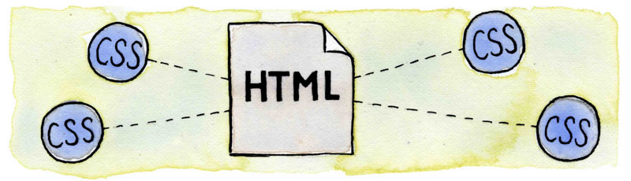

CSS 基础
CSS
Cascading Style Sheet
层叠样式表
HTML

HTML+CSS

How to write CSS?
Hello, kitty!
hello, kitty!
CSS Attribute & Value
height: 100px;
background-color: rgba(255,255,255,0);
color: blue/#f1f1f1;
font-size: 14px;
margin: 20px;
padding: 10px;
border: 2px solid red;
......
How CSS works
- How to link css to html?
- Selector
How to link css?
1. Adding inline CSS to HTML tags
2. Embedding CSS into the HTML
3. Linking to a separate CSS file
4. Importing a CSS file from within CSS
Selector
Used to select the element(s) you want to style.
Basic Selectors
- Tag selectors → tagName
- ID selectors → #idName
- Class selectors → .className
- Attribute → [attr=value], [type='text']
- Universal selectors → *
Combinators
- Descendant selectors → div p
- Child selectors → div > p
- Adjacent sibling selectors → div + p
- General sibling selectors → div ~ span
Hello kitty
Hello kitty
Hello Kitty
Hello Tom
Multiple class
Qustion: What's cat's color?
Blue cat
How to calculate css specificity？
inline style > #id> .class> element
!important
I'm the most powerful!
Box model
Box-model(W3C)

Box-model(IE)
Question: What's actural width in brower (W3C and IE)?
Answer
W3C: 460px | IE: 400px
How to handle this?
box-sizing: border-box | content-box;
Layout properties
DISPLAY
display: block | inline | inline-block | table | none
Block
- width,max-width,min-width
- height,max-height,min-height
- margin
- padding
Inline
- margin-left, margin-right
- padding
Inline-Block
Has both behavior of Inline and Block element.
example
float & position
float
float: left | right | none
example
clear
clear: none | left | right | both
example
POSITION
postion: static | relative | absolute | fixed;
position: relative
relative to itself, no effect on it's positioning
example
position:absolute
positioned relative to the next parent element with relative (or absolute) positioning
.parent {
position: relative;
}
.absolute {
position:absolute;
right:20px;
bottom:0;
}
example
position:fixed
positioned relative the browser window
top, right, bottom, left
Z-INDEX
example
Q & A
- CSS W3school
- Specificity
- Can I Use